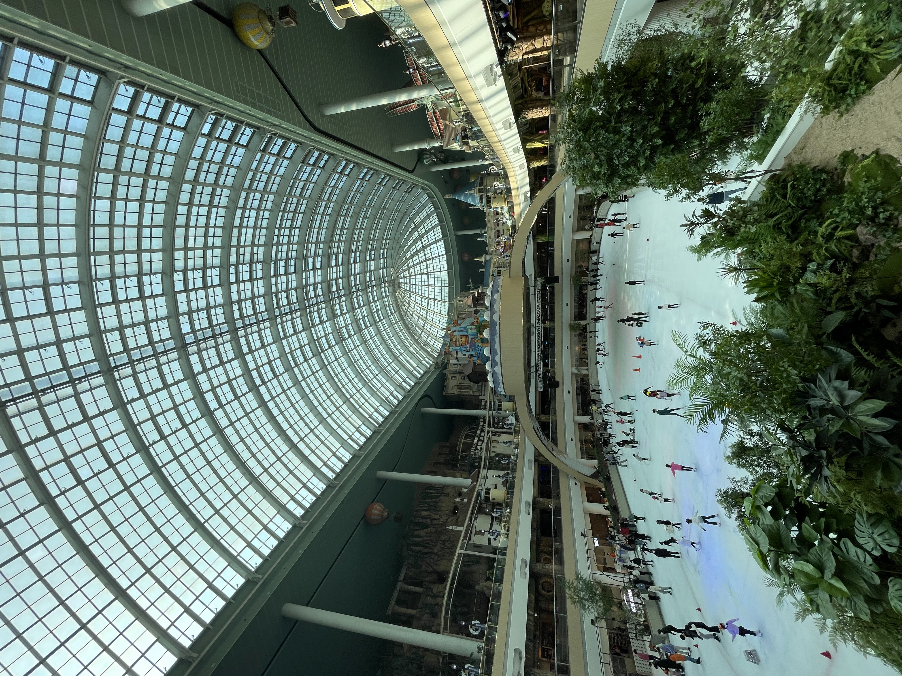
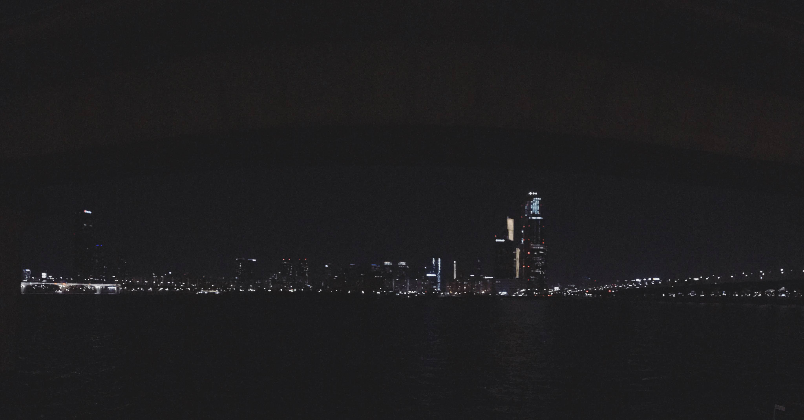
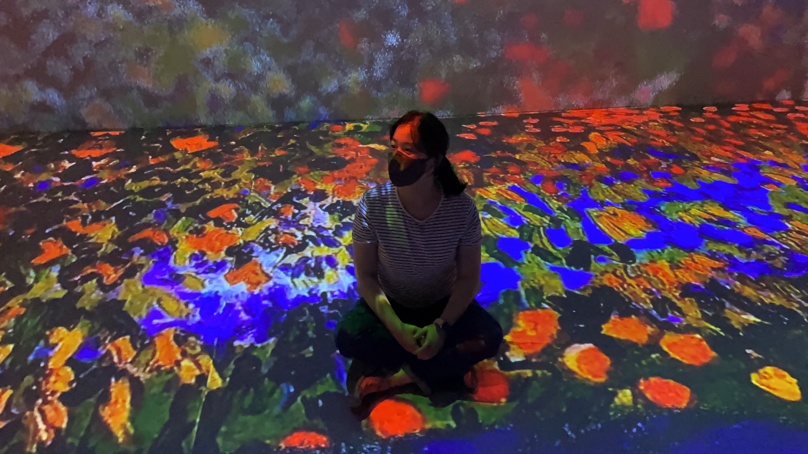

The City of the Spectacle: A Media-Spatial Analysis of the Jamsil Lotte Complex
Jamsil Lotte complex is a commercial and cultural complex located in the center of Seoul, South Korea. In this paper, Jamsil Lotte complex is examined as a city of media spectacle within the context of urban development. Approaching with a media-spatial perspective, I employed Walter Benjamin's theoretical notions such as ‘phantasmagoria’ to explore urban modernity by reconstructing the complex into multiple analytical places.

The Relationship between Future Anxiety Due to COVID-19 and Vigilance: The Role of Message Fatigue and Autonomy Satisfaction.
Aenean ornare velit lacus, ac varius enim lorem ullamcorper dolore. Proin aliquam facilisis ante interdum. Sed nulla amet lorem feugiat tempus aliquam.

A Multimodal Analysis on the Composition of Meaning and Experience in the Mediated Exhibition Space of Poetic AI
Critically approaching media art and AI art as a new art form and technology medium, the mediated art space of Poetic AI was analyzed in multimodal analysis method.
"What does your day taste like?" Non-symbolic communication through the taste of tea capsules
In this study, a new type of communication was experimented to convert an individual's schedule and stress index into 'taste' and share it together. To this end, a taste scale according to emotions and stress conditions was devised, and an app called "BesTEA" was designed to measure schedule and stress and extract it as a taste of tea.